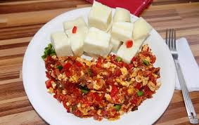
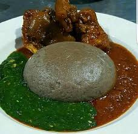

Main Course
At Ganny's Restaurant, our main dishes are the heart and soul of our culinary experience. Each dish is thoughtfully prepared with care and attention to detail, ensuring that every bite is a moment of pure delight for our guests. From savory classics to innovative creations, our main food menu is a celebration of flavor and freshness. Indulge in our succulent grilled steaks, cooked to perfection and served with your choice of sides. Or, savor the bold and aromatic spices of our signature curry dishes, bursting with vibrant flavors and served with fragrant rice. Our Main Course dishes include the following:
-
Jellof Rice: Indulge in the rich flavors of our authentic jollof rice, bursting with savory goodness and a hint of smokiness. Or try our creamy coconut rice, infused with fragrant spices and perfect for pairing with our seafood specialties.
Jellof Rice Rice And Stew Village Rice Ghana Jellof Rice 

Ganny's Kitchen Jellof Rice, where every grain is a symphony of flavor and texture. Crafted with care and seasoned to perfection, our rice dishes are the perfect complement to any meal.
-
Fried Rice: At Ganny's Kitchen, our fried rice is a beloved classic that embodies the flavors of home-cooked comfort. Made with the finest ingredients and expertly seasoned, our fried rice is a flavorful and satisfying dish that's perfect for any occasion. Indulge in the savory goodness of our fried rice, packed with colorful vegetables, tender chicken, and aromatic spices. Each bite is a tantalizing blend of flavors and textures, with the perfect balance of savory and slightly sweet notes.
Egg Fried Rice Mexican Fried Rice Nigerian Fried Rice Japan Fried Rice Ganny's Kitchen Fried Rice, where every grain is a symphony of flavor and texture. Crafted with care and seasoned to perfection, our rice dishes are the perfect complement to any meal.
-
Porridge: At Ganny's Kitchen, we believe that comfort begins with a warm bowl of porridge. Our hearty and wholesome porridge is made with care, using the finest grains and traditional recipes passed down through generations. Indulge in the comforting simplicity of our porridge, served steaming hot and topped with your choice of delicious accompaniments such as honey, fresh fruit, or nuts. Whether enjoyed as a nourishing breakfast or a soothing snack, our porridge is sure to warm your heart and nourish your soul.
Yam And Egg Sauce Yam And Bean Unripe Plantain Porridge Ripe Plantain Porridge  
Ganny's Kitchen Porridge, where every grain is a symphony of flavor and texture. Crafted with care and seasoned to perfection, our rice dishes are the perfect complement to any meal.
-
Swallow: Welcome to Ganny's Kitchen, where we proudly present a tantalizing array of authentic Nigerian soups, each brimming with flavor and tradition. From the hearty richness of Egusi Soup to the refreshing simplicity of Ewedu Soup, our menu celebrates the diverse culinary heritage of West Africa. Indulge in the robust flavors of Afang Soup, a delightful combination of tender meats, assorted seafood, and indigenous vegetables such as waterleaf and okazi leaves. Or savor the velvety smoothness of Ogbono Soup, thickened with ground ogbono seeds and bursting with savory goodness.
For those seeking a lighter option, our Vegetable Soup is a colorful medley of seasonal produce simmered to perfection, while our Okra Soup offers a delightful blend of sliced okra, tomatoes, and spices, creating a dish that is both nutritious and delicious. And let's not forget the classic comfort of Egusi Soup, made with ground melon seeds, leafy greens, and your choice of protein, delivering a taste of home in every spoonful. Finish off your culinary journey with a bowl of Ewedu Soup, a refreshing and nutritious broth made from jute leaves, perfect for cleansing the palate and soothing the soul.
At Ganny's Kitchen, we invite you to savor the rich tapestry of Nigerian cuisine through our diverse selection of soups. Join us and experience the warmth, flavor, and tradition of West African cooking at its finest.Afang Soup Ewedu Soup Egusi Soup Vegetable Soup  
Okra Soup Ogbono Soup Oha Leaf Soup Bitter Leaf Soup Ganny's Kitchen Swallow, where every grain is a symphony of flavor and texture. Crafted with care and seasoned to perfection, our rice dishes are the perfect complement to any meal.